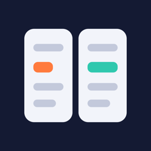

DiffwisePrivacy Policy
Last updated: 26 October 2026 · Türkçe
Short version: Diffwise does not collect, transmit, sell or share any data. Files are read and compared on your device. There are no accounts, no analytics, no advertising and no third-party SDKs. The app works without an internet connection.
Files you compare
Diffwise only sees the files you choose with the system Files browser, share to it, or drop onto it. It does not scan your device or iCloud Drive. To let you reopen a comparison later, Diffwise keeps a system security bookmark to each file and the comparison result in the app's private storage on your device; the original file stays where it is.
History and reports
Saved comparisons are stored on your device only. You can delete them at any time from Settings → Privacy & Local Data (all history, or history older than 30 days). Exported reports are created in temporary storage until you share or save them; you can clear them from the same screen. Everything is removed when you delete the app.
Settings
Your preferences (appearance, comparison options, profiles) are stored on your device only.
Children
Diffwise does not knowingly collect information from anyone, including children.
Contact
Gizlilik Politikası (Türkçe)
Kısaca: Diffwise hiçbir veri toplamaz, göndermez, satmaz ya da paylaşmaz. Dosyalar cihazında okunur ve karşılaştırılır. Hesap, analitik, reklam ve üçüncü taraf SDK yoktur. Uygulama internet bağlantısı olmadan çalışır.
Diffwise yalnız Dosyalar ile seçtiğin, paylaştığın ya da üzerine bıraktığın dosyaları görür. Bir karşılaştırmayı sonra yeniden açabilmen için dosyaya ait bir sistem yer imi ve karşılaştırma sonucu cihazındaki uygulama alanında tutulur; dosyanın kendisi yerinde kalır.
Kayıtlı karşılaştırmalar yalnız cihazında saklanır; Ayarlar → Gizlilik ve Yerel Veriler ekranından tümünü ya da 30 günden eskileri silebilirsin. Dışa aktarılan raporlar paylaşana kadar geçici alanda tutulur ve aynı ekrandan temizlenebilir. Tercihlerin yalnız cihazında saklanır; uygulamayı silince her şey kaldırılır.
İletişim: maliksari06@gmail.com